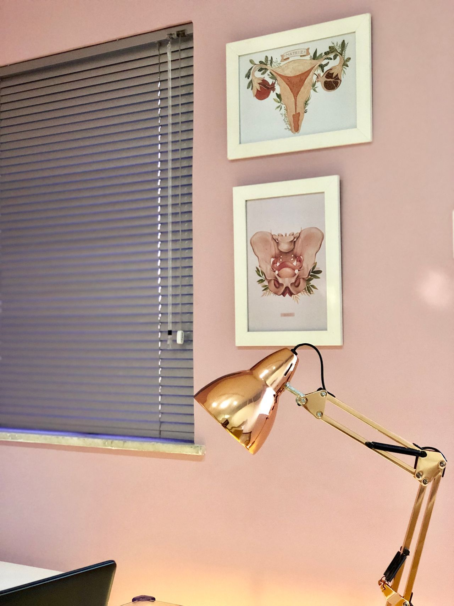
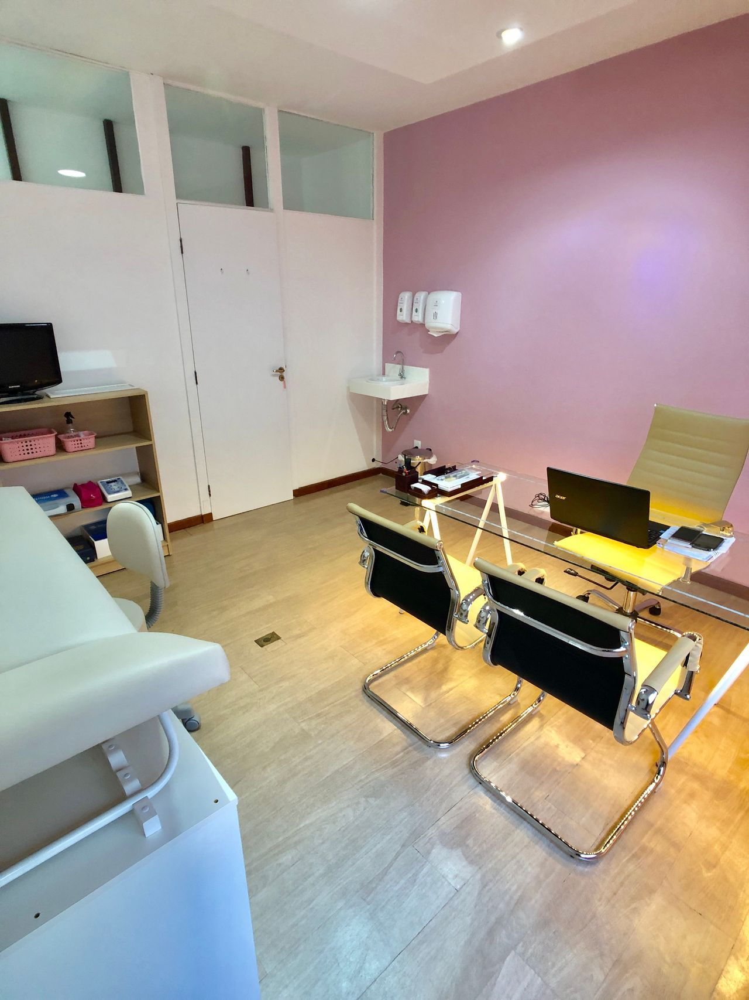
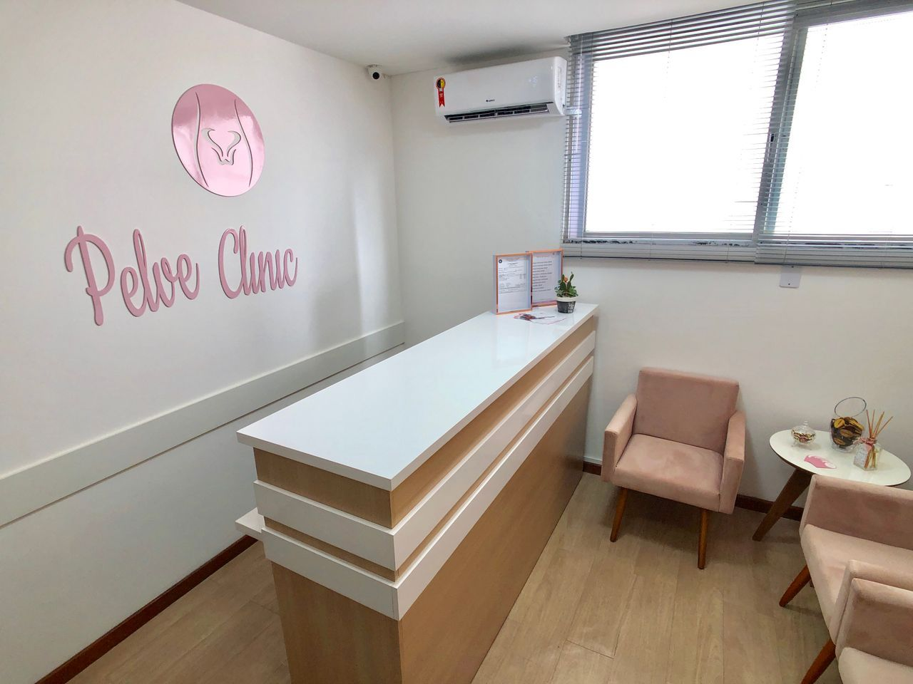
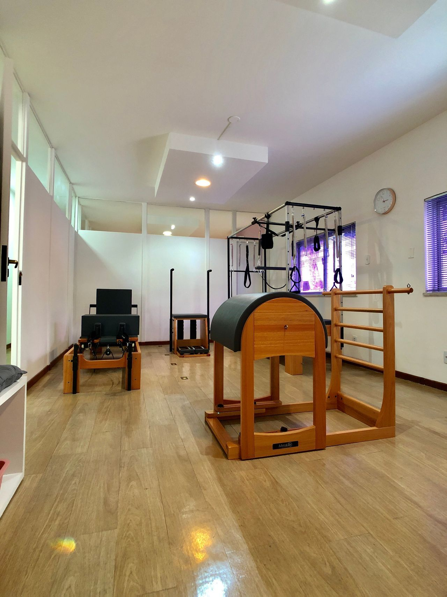
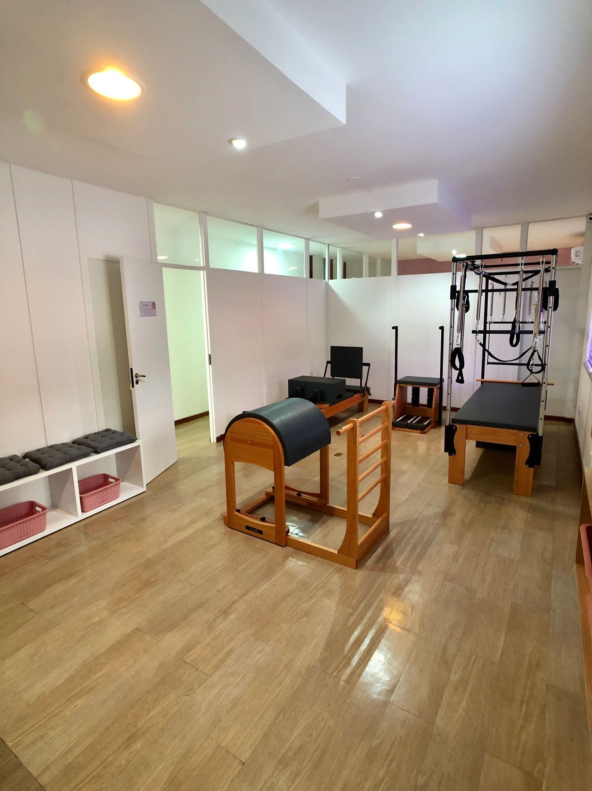
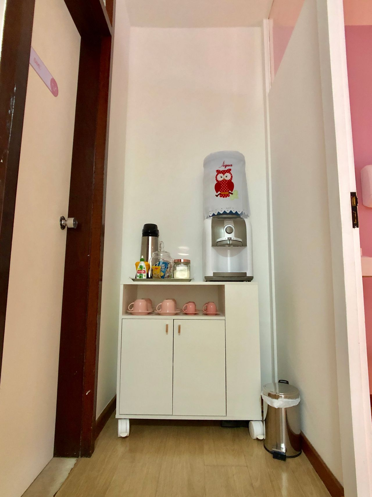
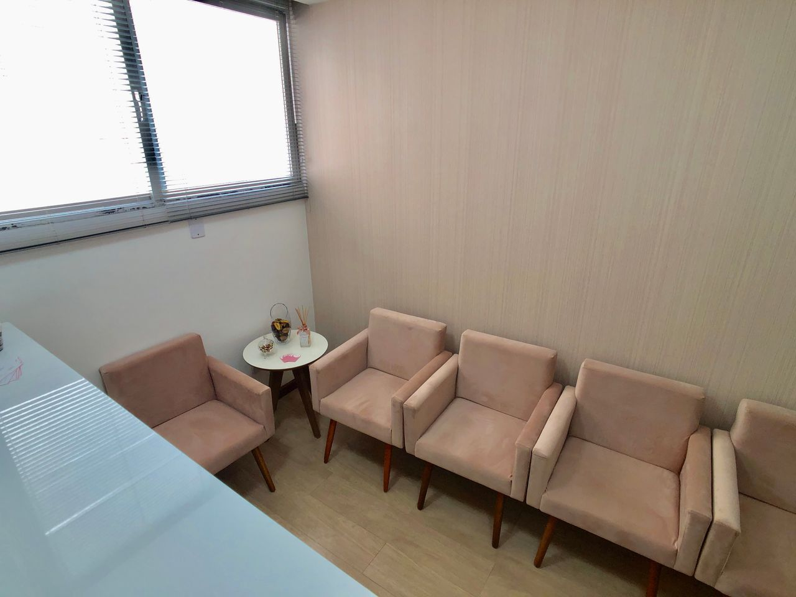

Osteopatia estrutural
Abordagem voltada a mobilidade, articulações, músculos e relações biomecânicas que podem influenciar o movimento.
Uma abordagem individualizada para compreender o corpo de forma integrada, aliviar limitações e favorecer uma rotina com mais conforto, mobilidade e confiança.



Michele é fisioterapeuta formada pela Escola Bahiana de Medicina e Saúde Pública e osteopata pela EBRAFIM. Sua formação reúne terapia manual, osteopatia estrutural, visceral, craniana, pediátrica e esportiva.
A proposta do atendimento é olhar além do ponto de dor: compreender relações de movimento, hábitos, sobrecargas e necessidades individuais para construir uma conduta adequada a cada pessoa.
A osteopatia utiliza avaliação clínica e técnicas manuais para compreender como diferentes estruturas e sistemas do corpo se relacionam. A conduta é definida de forma individual, de acordo com cada caso.
Abordagem voltada a mobilidade, articulações, músculos e relações biomecânicas que podem influenciar o movimento.
Técnicas manuais que integram diferentes regiões do corpo dentro de uma avaliação osteopática ampla.
Atendimento cuidadoso e adaptado a bebês e crianças, respeitando cada fase do desenvolvimento.
Acompanhamento osteopático durante a gravidez, considerando as adaptações posturais e funcionais desse período.
Avaliação do movimento e das demandas funcionais para pessoas fisicamente ativas e praticantes de esporte.
Recursos manuais associados à experiência em terapia manual, RPG e cuidado postural individualizado.

O atendimento é construído a partir da conversa, da avaliação e da compreensão do que o seu corpo apresenta naquele momento.
A identidade visual acompanha a proposta do atendimento: comunicação simples, acolhedora e centrada em cada pessoa. Todos os elementos gráficos desta página são carregados pelo próprio site.



A consulta é individualizada e parte de uma avaliação cuidadosa para definir a conduta mais adequada às necessidades de cada pessoa.
Escuta clínica atenta para compreender queixas, rotina, histórico e objetivos.
Atendimento individualizadoExplicações claras sobre a avaliação, a abordagem utilizada e os próximos passos.
Comunicação transparenteUm olhar integrado para movimento, mobilidade e relações funcionais do corpo.
Abordagem osteopáticaEntre em contato para tirar dúvidas sobre o atendimento e verificar disponibilidade de horários em Salvador.
Agendar atendimento ↗Fisioterapia e osteopatia com abordagem individualizada, atendimento presencial e cuidado integral.